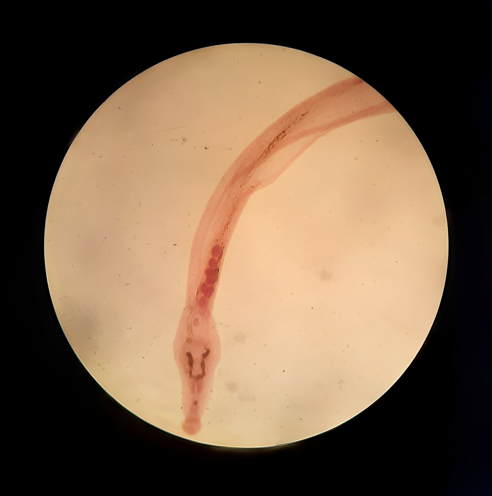
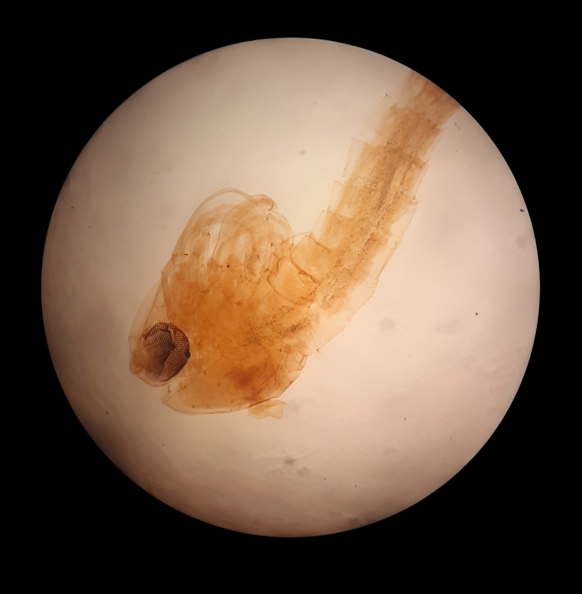
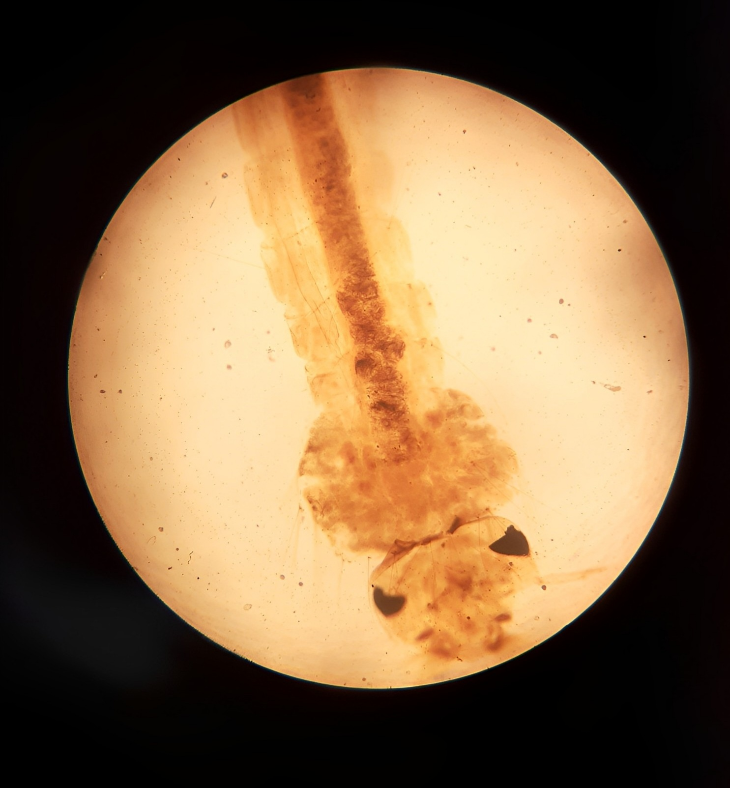
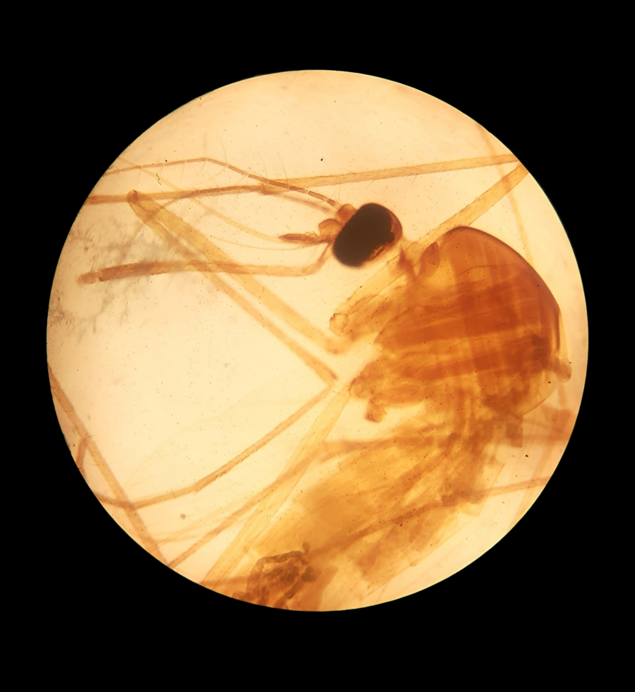
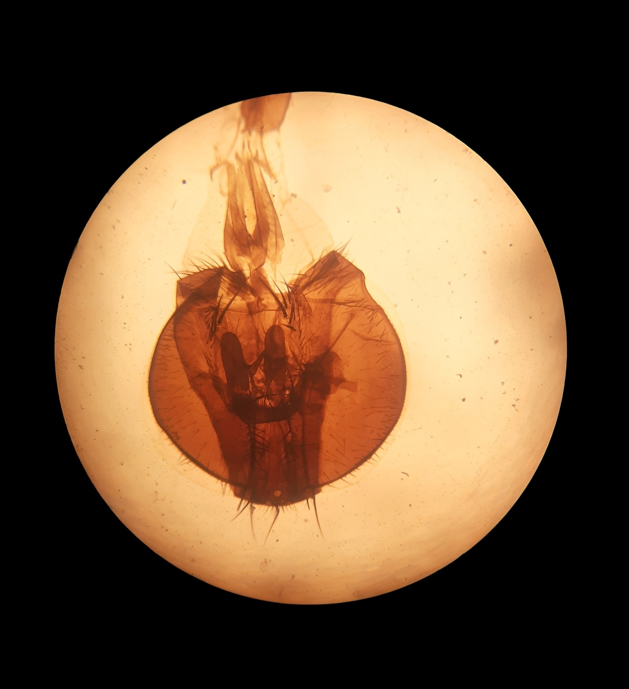
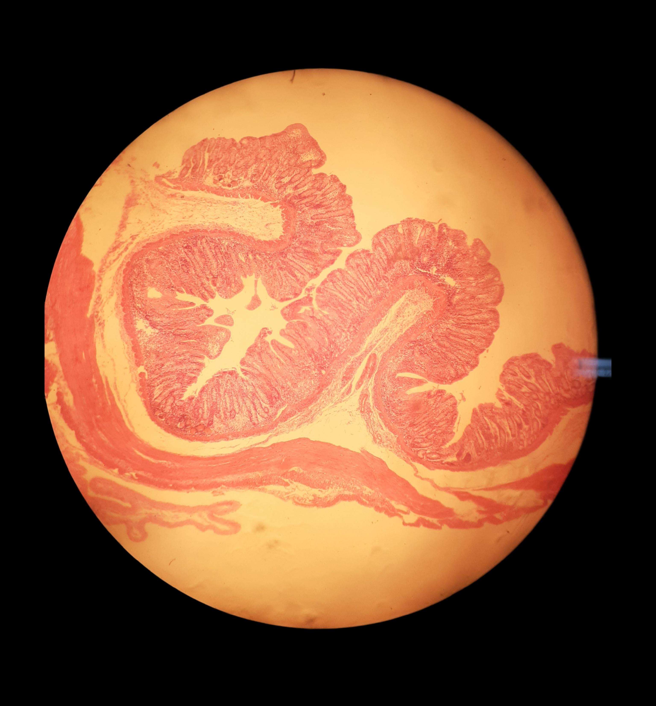

Bem-vindo ao nosso Laboratório Virtual de Miscroscopia! Nesta página, convidamos você a mergulhar em um
universo
invisível a olho nu, mas onde os perigos do mundo microscópico se revelam. Através de nossos estudos e
pesquisas, temos como objetivo compartilhar informações valiosas sobre o universo da parasitologia . Nossa
missão é tornar a acessível a todo estudante de biologia uma experiência cheia de aventuras e curiosidades a
partir do material de parasitologia presente e disponibilizado
pelo Laboratório de Biologia do IFRN-Campus Parnamirim.
A partir do nosso catálogo, você poderá conhecer amostras labotoriais de vetores, parasitas e tecidos
infectados.
As imagens impressionantes que você poderá desfrutar logo abaixo foram capturadas pelos próprios
microscópios do IFRN Campus Parnamirim!
Se você é um entusiasta da Biologia microscopica ou está apenas começando a explorar esse campo, esperamos
que esse contêudo possa te ajudar e
despertar ainda mais a sua curiosidade durante essa jornada de descobertas microscópicas.
Amostras Parasitologia
Anopheles
Schistosoma joponicum
Ascaris
Culex
Tênia proglótides grávidas
Cisticerco escolex
Amostras Patologia
Cut liver infected with schistosomes
Intestine Schistosomiasis
Tuberculoid
Lung Shisosomiasis
Miliary Lung Tuberculosis
Schistosoma japonicum

Schistosoma japonicum (male) W.M
Lâmina do Laboratório de biologia do IFRN- Campus Parnamirim
Hospedeiro: Humanos e alguns animais, como certas espécies de primatas; Doença: Malária.
Coloração da Lâmina: corante.
Culex

Culex Pupa
Lâmina do Laboratório de biologia do IFRN- Campus Parnamirim
Domínio: Eukaryota; Reino: Animalia (animais); Filo: Arthropoda (artrópodes);
Classe: Insecta (insetos);
Ordem: Diptera (moscas e mosquitos);
Família: Culicidae (mosquitos);
Gênero:Culex;
Hospedeiro: Seres humanos, aves, outros
mamíferos, entre outros; Agente etiológico: Os mosquitos Culex podem transmitir diversos agentes
etiológicos, incluindo vírus e
parasitas;
Doenças associadas:
Febre do Nilo e Filariose; Coloração: corante.
Culex female (mouthparts) W.M
Lâmina do Laboratório de biologia do IFRN- Campus Parnamirim
Domínio: Eukaryota; Reino: Animalia (animais); Filo: Arthropoda (artrópodes);
Classe: Insecta (insetos);
Ordem: Diptera (moscas e mosquitos);
Família: Culicidae (mosquitos);
Gênero:Culex;
Hospedeiro: Seres humanos, aves, outros
mamíferos, entre outros; Agente etiológico: Os mosquitos Culex podem transmitir diversos agentes
etiológicos, incluindo vírus e
parasitas;
Doenças associadas:
Febre do Nilo e Filariose; Coloração: corante .

Culex larva (mosquito)
Lâmina do Laboratório de biologia do IFRN- Campus Parnamirim
Domínio: Eukaryota; Reino: Animalia (animais); Filo: Arthropoda (artrópodes);
Classe: Insecta (insetos);
Ordem: Diptera (moscas e mosquitos);
Família: Culicidae (mosquitos);
Gênero:Culex;
Hospedeiro: Seres humanos, aves, outros mamíferos, entre outros; Agente etiológico: Os mosquitos Culex podem transmitir diversos agentes
etiológicos, incluindo vírus e
parasitas;
Doenças associadas:
Febre do Nilo e Filariose; Coloração: corante.

Culex fêmea W.M
Lâmina do Laboratório de biologia do IFRN- Campus Parnamirim
Domínio: Eukaryota; Reino: Animalia (animais); Filo: Arthropoda (artrópodes);
Classe: Insecta (insetos);
Ordem: Diptera (moscas e mosquitos);
Família: Culicidae (mosquitos);
Gênero:Culex;
Hospedeiro: Seres humanos, aves, outros mamíferos, entre outros; Agente etiológico: Os mosquitos Culex podem transmitir diversos agentes
etiológicos, incluindo vírus e
parasitas;
Doenças associadas:
Febre do Nilo e Filariose; Coloração: corante .

Culex macho W.M
Lâmina do Laboratório de biologia do IFRN- Campus Parnamirim
Domínio: Eukaryota; Reino: Animalia (animais); Filo: Arthropoda (artrópodes);
Classe: Insecta (insetos);
Ordem: Diptera (moscas e mosquitos);
Família: Culicidae (mosquitos);
Gênero:Culex;
Hospedeiro: Seres humanos, aves, outros mamíferos, entre outros; Agente etiológico: Os mosquitos Culex podem transmitir diversos agentes
etiológicos, incluindo vírus e
parasitas;
Doenças associadas:
Febre do Nilo e Filariose; Coloração: corante .
Schistosoma

Intestine Schistosomiasis
Lâmina do Laboratório de biologia do IFRN- Campus Parnamirim
Canva. (2023). Microscópio [Imagem]. Recuperado de https://www.canva.com
SANTIAGO, Alexandre. Schistosoma mansoni: resumo e classificação. In: Título do periódico.
Local de publicação: Editora, volume, número, páginas. Data de publicação. Disponível em:
https://www2.unifap.br/alexandresantiago/files/2012/12/Schistosoma_mansoni_resumo_Classificacao.pdf. Acesso
em: 22 de junho de 2023.
LABPROTEINAS.Ciclo biológico da esquistossomose. Disponível em:
https://www.ufjf.br/labproteinas/material-de-apoio/esquistossomose/ciclo-biologico/. Acesso em: 22 de junho
de 2023.
Ministério da Saúde.Guia de vigilância entomológica do Aedes aegypti. Brasília: Ministério
da Saúde, 2016. Disponível em:
https://bvsms.saude.gov.br/bvs/publicacoes/guia_vigilancia_culex_quinquefasciatus.pdf. Acesso em: 25 jun.
2023.
Barcelos, I. S. Caracterização molecular de larvas de Anopheles cruzii Dyar & Knab, 1908 e
de Anopheles bellator Dyar & Knab, 1908 (Diptera: Culicidae) do município de Ituiutaba, Minas Gerais. 2016.
97 f. Dissertação (Mestrado em Ciências Biológicas) - Instituto de Ciências Biológicas, Universidade Federal
de Uberlândia, Uberlândia, 2016. Disponível em:
https://repositorio.ufu.br/bitstream/123456789/16559/2/ISCBarcelosTESPRT2.pdf. Acesso em: 25 jun. 2023.
Secretaria de Estado de Saúde de Mato Grosso do Sul. Apostila de Treinamento - Controle de
Vetores. 3ª edição. Mato Grosso do Sul, 2023. Disponível em:
https://www.vs.saude.ms.gov.br/wp-content/uploads/2023/02/Apostila-treinamento-CCV-SES-I-3.pdf. Acesso em:
25 jun. 2023.
Neves, David Pereira. Parasitologia Humana. 10ª ed. São Paulo: Atheneu, 2000.
Universidade Federal Rural do Rio de Janeiro. Apostila: Nematoides.Rio de Janeiro, 2016.
Disponível em: http://r1.ufrrj.br/wp/iv/files/2016/07/Apostila_Nematoides.pdf. Acesso em: 25 jun. 2023.
MSD Manuais Profissionais. Infecção por Taenia solium (tênia da carne de porco) e
cisticercose. Disponível em:
https://www.msdmanuals.com/pt-br/profissional/doenças-infecciosas/cestódeos-vermes-em-fita/infecção-por-taenia-solium-tênia-da-carne-de-porco-e-cisticercose.
Acesso em: 05 de agosto de 2023.
MSD Manuais Profissionais. Infecção por Taenia saginata (tênia da carne bovina).
Disponível em:
https://www.msdmanuals.com/pt-br/profissional/doen%C3%A7as-infecciosas/cest%C3%B3deos-vermes-em-fita/infec%C3%A7%C3%A3o-por-taenia-saginata-t%C3%AAnia-da-carne-bovina#:~:text=T%C3%AAnias%20T.,e%20na%20Am%C3%A9rica%20do%20Sul.
Acesso em: 05 de agosto de 2023.
WILDNER, Letícia Muraro et al. Micobactérias: epidemiologia e diagnóstico. Revista de
Patologia Tropical, Florianópolis, Santa Catarina, p. 208-209, 2011. Disponível em:
https://revistas.ufg.br/iptsp/article/download/15972/9822/64887. Acesso em: 5 de agosto de 2023.
Ribeiro, Denize. Resumo sobre o parasito da vez. Baseado em Neves, David Pereira.
Disponível em:
//www.google.com/url?sa=t&source=web&rct=j&url=https://www2.unifap.br/alexandresantiago/files/2012/12/Schistosoma_mansoni_resumo_Classificacao.pdf&ved=2ahUKEwjU44yJ597_AhWpLrkGHcgPBAAQFnoECBAQAQ&usg=AOvVaw1xPFuHOw_wWw6uUB4rRn5C>
. Acesso em: 25 jun. 2023.